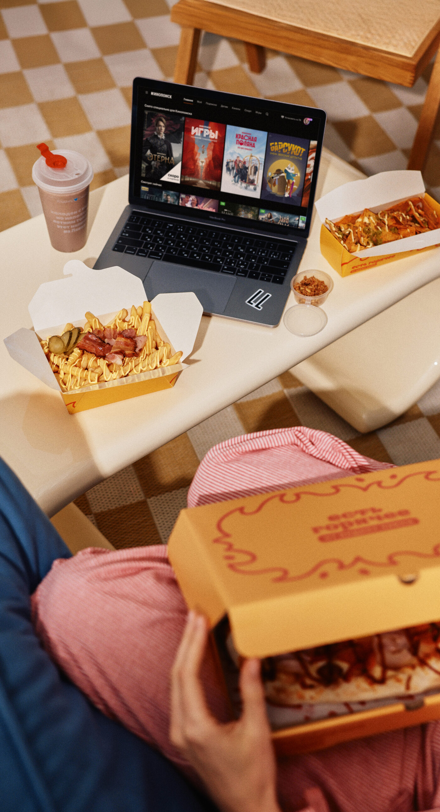

Метрики
вместо интуиции
Как технологии франчайзера помогают держать качество и не отдавать прибыль лишним часам

Артём Сизов
Франчайзи Яндекс Лавки · Ярославль и Иваново
- 6 лет в бизнесе: ритейл и e-commerce
- Команда сейчас — более 500 человек: курьеры, склад, офис
- 16 месяцев во франшизе, показатели выше среднего по сети
Маржу считаю до рубля
Пришёл из офлайн-ритейла. Франчайзер уже дал данные и технологии — моя задача применить их так, чтобы качество не покупалось лишним ФОТ
16 месяцев во франшизе · показатели и доходность выше среднего
Франчайзер даёт систему координат:
CTE + OPH = управляемая экономика
часы не раздуты
Если оптимизировать только одну метрику — другая превращается в скрытый убыток
Оптимум появился не сразу
Мы прошли четыре крайности
маржа исчезает
качество
настройка
ФОТ −15%
Не угадывать. Ставить эксперимент → смотреть обе метрики → корректировать
Каждая секунда —
на счету
Технологии платформы показывают путь заказа до конкретного SKU и сотрудника
«Я знаю, сколько секунд сотрудник собирает пачку макарон»
Быстрее — без лишних часов
Данные платформы и личный KPI ускорили сборку заказа
Мотивация привязана к измеримому действию, а не к субъективному «старанию»
Франчайзер даёт технологии.
Партнёр превращает их в результат
- Данные в реальном времени
- Алгоритмы зонирования и прогноз пиков
- Бенчмарки, KPI и поддержка команды
- Следит за CTE и OPH
- Настраивает процессы и роли
- Обучает, мотивирует и повторяет цикл
CTE в стандарте + OPH растёт = качество и прибыль